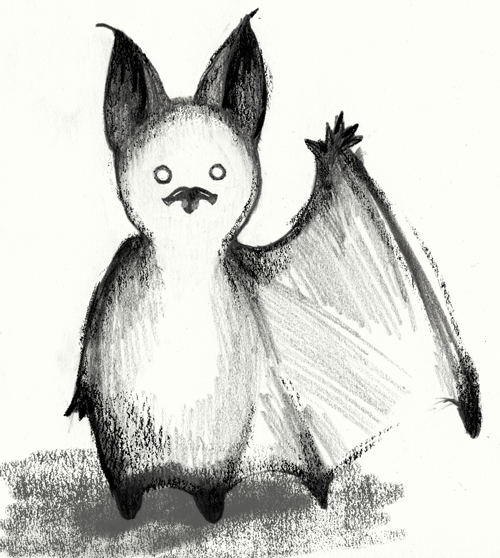

Pay attention: I am a P. nathusii, (B, C) specifically male 17b, (E) land here, (D) we share a common social identity and common communication pool.
Somehow, I think they missed some of the poetry of bat romantic balladry. If I could take liberties, I’d offer this alternate translation …